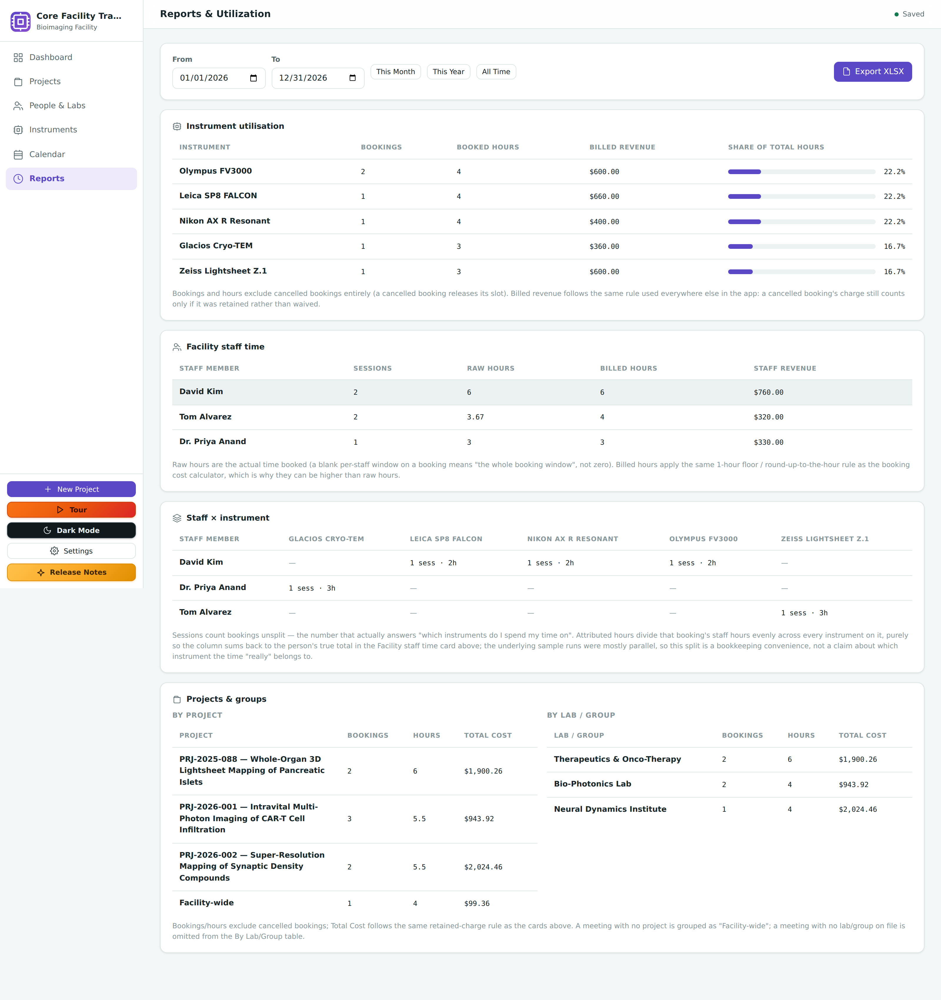
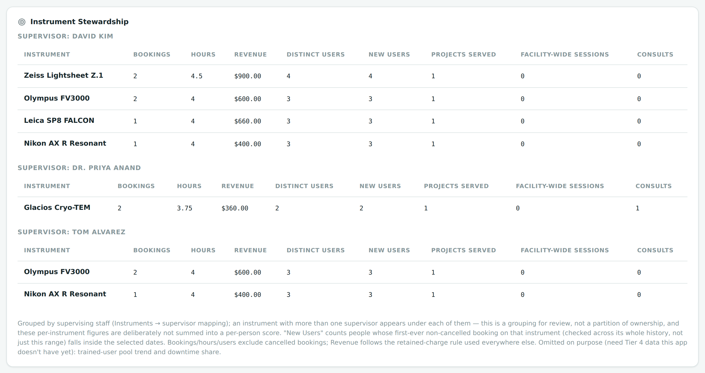
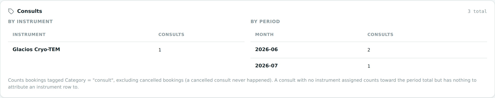
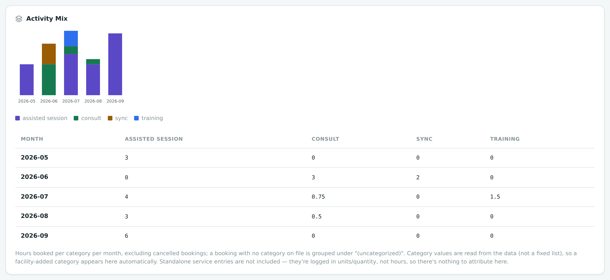
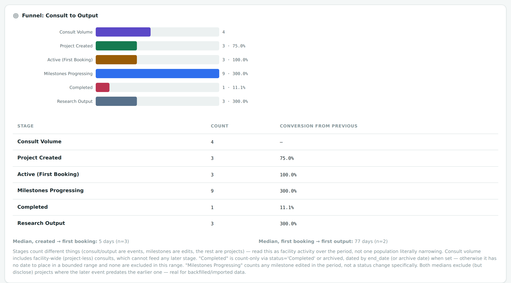
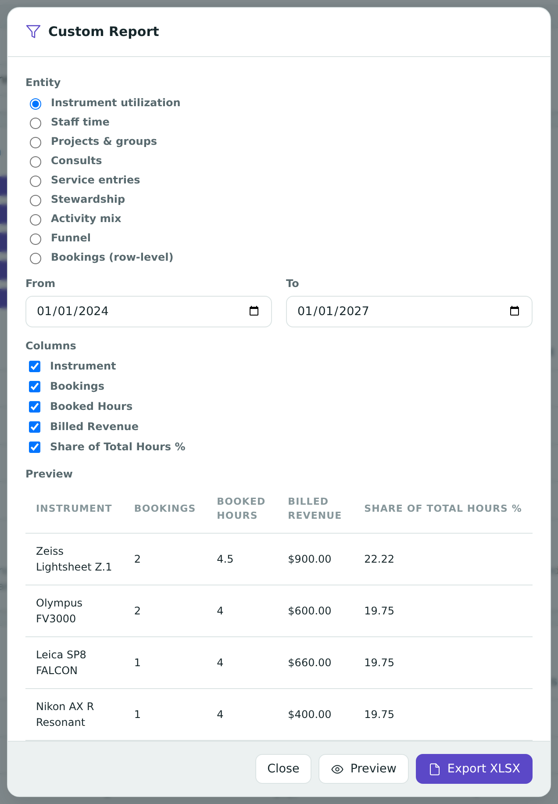

Chapter 13
Reports & Utilization
Two rules decide what counts as "happened" and what counts as "billed" — once you know them, every number on this screen makes sense, from the four original cards to the newest funnel and scorecard.
What you'll be able to do
- Explain the two rules that govern every figure on the Reports screen.
- Read the instrument, staff, matrix, and project/lab cards, column by column.
- Understand why a booking with two instruments counts double on hours, but not on sessions.
- Log standalone billable work that never went through a booking, and count consults separately from every other kind of session.
- Read the instrument stewardship scorecard the way a supervisor would when asked to justify a piece of equipment — and know which two things it deliberately can't tell you yet.
- Read the breadth, activity mix, and consult-to-output funnel cards, and know exactly what each stage of the funnel counts.
- Build your own report by picking an entity, a date range, and only the columns you need.
- Pick a date range and know why some rows disappear when you narrow it.
- Trust that the exported spreadsheet always matches what's on screen.
The two rules — read these first
Almost everything confusing on this screen traces back to two simple rules. Learn these and the rest of the chapter is just bookkeeping.
🧮 Rule 1 — Occupancy/hours: a cancelled booking never happened. If a booking is cancelled, it stops counting toward any instrument's or staff member's hours — the slot it once held is treated as if it had always been free. This matches how cancelling frees up the slot for someone else to book.
🧮 Rule 2 — Money: a charge counts unless it was cancelled AND waived. A booking's cost still counts toward revenue totals as long as its charge wasn't dropped or waived — even if the booking itself was cancelled. This is exactly the cancel decision table from the previous chapter.
🔍 Why it works this way. These two rules can point in different directions on the same booking, and that's intentional. A booking cancelled after its start time, with its charge kept, is a real example: the facility held that instrument's time (so it should count as revenue — the slot really was occupied and paid for), but the booking never actually ran a session (so it shouldn't count as occupied hours — nobody was using the instrument). That booking adds money to the Money card but zero hours to the Instrument card. It looks inconsistent until you remember these are two separate questions: "did this booking cost the facility anything?" and "was equipment actually in use?"
💡 Every card on this page follows both rules. That used to mean four cards; it now means about ten, plus a custom report builder that covers most of them — Staff × Instrument and Breadth are screen-and-spreadsheet only, and the builder adds one entity of its own, a row-level list of bookings. Standalone service entries (logged outside any booking) follow only the money rule — they never had a schedule slot to occupy, so there's no occupancy question to ask about them.
Choosing a date range
Every card on this screen is scoped to one date range at a time, set at the top of the page.
- Pick From and To dates, or use one of the presets: This Month, This Year, or All Time.
- The default range is the current year, so the screen shows something useful the moment you open it.
- Every card below updates together — there's no per-card range.

Below this bar, the cards run in this order: Instrument Utilization, Facility Staff Time, Staff × Instrument, Projects & Groups, Instrument Stewardship, Consults, Service Entries, Breadth, Activity Mix, and Funnel: Consult to Output. This chapter walks through them in that same order, then covers the charts drawn above three of the tables and the Custom Report builder that reads from all of them.
Card 1 — Instrument utilization
One row per instrument, for bookings that fall in the selected date range:
- Bookings — how many bookings used this instrument (cancelled ones excluded, per Rule 1).
- Booked hours — the total time this instrument was reserved for, across those bookings.
- Billed revenue — the money those bookings' instrument charges brought in (per Rule 2, so a cancelled-but-charged booking's revenue still shows here even though its hours don't).
- Share of total hours — a bar showing this instrument's hours as a percentage of all instrument hours in the range, so you can see at a glance which instruments are the busiest.
⚠️ Careful — parallel occupancy. If a single 2-hour booking uses two instruments together, each instrument gets credited with the full 2 hours, not 1 hour each. That's not double-counting — both instruments really were occupied for the whole 2 hours, at the same time, by the same booking.
🧪 Try it. Open the demo sandbox and open Reports with the default (This Year) range. Find a booking that uses two instruments at once in the Calendar, then check that both instruments show that booking's full duration in their Booked hours — not half each.
Card 2 — Facility staff time
One row per facility staff member:
- Sessions — how many bookings this person was assigned to as staff (cancelled ones excluded).
- Raw hours — their actual time on each booking: their own start/end window if they had one, or the whole booking if they didn't set one.
- Billed hours — the same time run through the one-hour minimum, round-up rule, so this is always the same as or larger than raw hours — never smaller.
- Staff revenue — the money their billed hours brought in.
💡 Tip. If a staff member's line for a booking has no personal start/end time set, their raw hours count as the whole booking window, exactly the same rule the live cost breakdown uses (see How Costs Are Calculated).
🧪 Try it. Open the demo sandbox — its three facility staff bill at 95, 110, and 80 per hour. Pick one, find their row on the Staff card, and check that Billed hours is never less than Raw hours — if any booking involved a partial hour, Billed hours should be visibly rounded up from it.
Card 3 — Staff × instrument matrix
This card cross-tabulates facility staff against instruments: one row per staff member, one column per instrument, and a cell showing how much of that person's time was spent on that instrument.
- Each cell reads as "n sess · x h" — a count of sessions, and a number of hours.
- Sessions are not split. If a staff member worked one booking that used two instruments, that's one full session credited under each instrument column they touched.
- Hours ARE split across the booking's instruments, so that each staff member's row still adds up to their real total hours rather than over-counting them. If someone spent 2 hours on a booking that used 2 instruments, each instrument's cell gets 1 of those 2 hours — the two combined give back their true 2 hours.
- This matrix only has cells for bookings that had at least one instrument on them. A booking with no instrument (staff time only) still counts on Card 2's Raw hours total, but has nothing to attribute a column to here, so it's left out of this card entirely.
🔍 Why it works this way. This is the opposite of Card 1's rule, and deliberately so: the Instrument card is answering "how occupied was this instrument?" (both instruments really were tied up for the whole time, so each gets full hours). The matrix is answering "how did this person's time break down by instrument?" — and a person only has so many hours in a day, so splitting keeps their row honest rather than making it look like they worked twice as many hours as they did.
⚠️ Careful. Because instrument-less bookings are left out, a staff member's matrix row does NOT always add up to their Raw hours total on Card 2 — only to the portion of it that came from bookings with an instrument attached. Someone with any staff-only session will show less here than their real total.
🧪 Try it. In the demo sandbox, find a staff member in the matrix and add up their row. Then compare it with their Raw hours total on Card 2 — if it's lower, that's the gap above: they have at least one booking with no instrument on it, credited on Card 2 but absent from this matrix.
Card 4 — By Project and By Lab/Group
Two related tables, grouping the same bookings a different way:
- By Project — one row per project, plus a "Facility-wide" row for bookings that weren't attached to any project.
- By Lab/Group — one row per lab/group named on a booking. A booking with no lab/group recorded is simply omitted from this table (there's nothing to group it under) — it still shows up in By Project and in Cards 1–2.
💡 Tip. "Facility-wide" isn't a real project — it's how the app labels bookings that were never attached to one. See Booking a Session for how a booking's project is (or isn't) chosen.
🔍 Why it works this way. Not every booking is tied to a specific research project — general facility maintenance sessions, walk-in demos, and the like still need to be tracked, so they're grouped under "Facility-wide" instead of being forced onto a project they don't belong to. Lab/Group is optional on a booking in a way project isn't always, so a booking genuinely missing that field is left out of the By-Lab table rather than inventing a fake "unknown lab" bucket.
💡 Service entries add money here too. A standalone service entry (see the Service Entries card below) attached to a project adds its charge to that project's Total Cost in the By Project table — it just never adds a booking or hours, since it never held a schedule slot.
Card 5 — Instrument stewardship scorecard
Where Card 1 answers "how busy is this instrument," this card answers the question a supervisor is actually asked: "why do we still have this instrument, and is it earning its keep?" It's grouped by supervising staff — the people set as an instrument's Supervising Staff on its own edit form — with one row per instrument under each supervisor:
- Bookings, Hours, Revenue — the same figures as Card 1, for this instrument alone.
- Distinct Users — how many different people actually used the instrument in the range.
- New Users — how many of those people were using this instrument for the very first time ever, with that first-ever booking falling inside the range. The app checks the instrument's whole booking history to know this, not just the range you've selected, so a returning user from three years ago is never mislabeled "new."
- Projects Served — how many distinct projects booked the instrument.
- Facility-Wide Sessions — how many of its bookings weren't attached to any project.
- Consults — how many of its bookings were tagged Category = "consult" (see the Consults card below).

⚠️ Careful — a shared instrument appears more than once, on purpose. If an instrument has two supervisors, its whole row repeats identically under each of them. That's a grouping for review, not a split of ownership — don't add the numbers from both appearances together, and don't read this as each supervisor being responsible for half. An instrument with no supervisor on file appears once, under "Unassigned."
🔍 Why two things are missing. This card was designed to also show a trained-user pool trend (is the base of people qualified to use this instrument growing?) and a downtime share (how much of its calendar time was lost to repairs or maintenance?). Both are left out, honestly, because the app has no training records and no downtime log to compute them from — not because they weren't wanted. If your facility tracks either of those elsewhere, this card won't duplicate it for you yet.
Card 6 — Consults
Counts bookings whose Category field is set to exactly "consult" (the built-in category on the booking form), broken down two ways:
- By Instrument — how many consults touched each instrument.
- By Period — how many consults happened each calendar month.

💡 Tip. A consult conversation with no instrument attached still counts toward the total and toward its month in By Period — it just has nothing to attribute an instrument row to. A cancelled consult never happened, per Rule 1, so it doesn't count anywhere on this card.
Card 7 — Service Entries
Not every billable thing a facility does goes through a booking — technician time spent reprocessing someone's data, sample prep, a per-sample fee. A service entry is a standalone charge you log directly, without creating a booking for it, attached to a project (or left facility-wide), with an optional staff member and instrument for reference, a quantity, a unit, and a rate.
- Service entries follow the money rule only. There's no occupancy rule to apply, because a service entry never had a start or end time — it never held a schedule slot in the first place.
- A cancelled entry's charge counts unless it was waived, exactly like a cancelled booking (Rule 2).
- Cancel and reinstate a service entry the same way you'd cancel a booking — the actions column on this card has both.
🔍 Why it works this way. This card exists for the billable work that happens around a booking rather than during one. Forcing it into a fake zero-length booking just to bill it would have muddied every hours-based figure elsewhere on this screen with entries that never actually occupied anything.
Card 8 — Breadth
Utilization tells you how busy the equipment is. Breadth asks a different question: how many different people and labs is the facility actually serving — and is that base growing?
- By Period — for each calendar month: how many distinct labs booked something, how many distinct people were attendees on a booking, and how many of those labs were booking the facility for the very first time ever (checked against the facility's whole history, the same way Card 5's "New Users" is).
- By Instrument — for each instrument: how many distinct labs and how many distinct people used it in the range.
A booking with no lab/group on file is left out of every lab count here, the same way it's left out of the By Lab/Group table on Card 4 — there's nothing to group it under.
💡 Per-lab consult attribution is off by default. A checkbox below the By Period and By Instrument tables, unchecked every time you load the page, adds a third table: how many consults each lab accounted for. It's opt-in rather than a standing column because attributing consults down to an individual lab is a more sensitive thing to track by default than the rest of this card.
Card 9 — Activity mix
Splits the facility's booked hours by Category (the same field the Consults card reads), one row per calendar month, one column per category actually in use.
- Category names come straight from your data — if your facility adds its own category on the booking form, it appears here automatically, with no setup needed on this screen.
- A booking left with no category still counts — it lands in an explicit "(uncategorized)" column, always shown last, rather than being silently dropped or folded into another category.
- Standalone service entries (Card 7) are not part of this mix. They're logged in quantity and units, not a start/end time, so there are no hours here to attribute them to.

Card 10 — Funnel: Consult to Output
This card follows facility activity through six stages, from a first conversation to a published result:
- Consult Volume — bookings tagged Category = "consult" in the range (same count as Card 6's total). Facility-wide consults (not attached to any project) count here, but since they're not tied to a project, they can't feed into any of the later, project-based stages.
- Project Created — projects created in the range.
- Active (First Booking) — projects (created any time) whose first-ever non-cancelled booking fell in the range. This isn't limited to the projects counted in the stage above it — a project created last year and only just booked for the first time counts here.
- Milestones Progressing — a count of milestone edits in the range, not a count of projects. Any change to a milestone counts, not only a status change, so this is "a milestone got touched," not "a milestone finished a review stage." A project with three milestones edited in the period contributes three, not one.
- Completed — projects marked Completed or archived, dated by their end date (or their archive date, if archived) when one is on file. A completed project with neither date has nothing to place it in a bounded range, so a narrow date range leaves it out (the card discloses the count when this happens); "All Time" has no boundary to exclude it from.
- Research Output — outputs logged on a project's Research Outputs card (publications, acknowledgements, datasets, and the like) in the range.

⚠️ Careful — this isn't one population narrowing down. The six stages count genuinely different kinds of things: consults and outputs are events, milestone changes are edits, the rest are projects. A conversion percentage can land above 100% (more milestone edits than active projects, say) — that's not a mistake, it just means this stage's count isn't a subset of the stage before it the way a sales funnel's would be. Read each stage as its own measure of facility activity over the period, not a shrinking pool of the same projects.
Below the table, two time-in-stage medians are reported — and only these two, by design:
- Created → first booking — how long, typically, between a project's creation and its first real booking. Measured over the projects created inside your date range.
- First booking → first output — how long, typically, from a project's first booking to its first logged research output. Measured over the projects whose first booking falls inside your date range. Both medians use each project's true first booking and first output, even when those fall outside the range — the range picks which projects to look at, not which dates count.
🔍 Why some projects are left out of the median, but still counted. A median needs a real, non-negative number of days to average — and for data that was backfilled or imported from somewhere else, a booking can genuinely be logged with a date before the project record itself was created in this app. A project that has no booking at all, or no output at all, simply isn't in that median's sample either — there is no duration to measure. Only the negative ones are called out under the card, because those are the ones that look like data you should worry about. That's not a bug in your data; it's just not a duration this card can average in. Those projects are dropped from the median calculation, but every one of them is still counted, and the count of how many were excluded is printed right next to the median — both on screen and in the exported spreadsheet — so the number is never silently lower than you'd expect with no explanation.
The charts
Three cards draw a small chart directly above their table: Instrument Utilization (a horizontal bar per instrument, its top 8 by hours), Funnel: Consult to Output (a bar per stage with its conversion percentage), and Activity Mix (a stacked bar per month, one colored segment per category).
🔍 Why it works this way. Every chart is drawn from the exact same numbers as the table sitting right below it — there's no separate calculation feeding the picture. If the Instrument Utilization chart shows more of a bar for one instrument, the table beneath it will show a bigger Booked Hours number for that same instrument. When a chart only has room for a handful of bars (Instrument Utilization caps its chart at the top 8), it says so right underneath — the full list is always in the table.
Custom Report builder
Every card above is a fixed shape. If you need a different combination of columns, a narrower date range for one figure, or just a spreadsheet without the other nine cards in it, the Custom Report button next to Export XLSX opens a builder:
- Pick an entity — one of the cards above (Instrument Utilization, Staff Time, Projects & Groups, Consults, Service Entries, Stewardship, Activity Mix, Funnel, or Bookings (Row-Level) — a plain list with one line per booking, cancelled ones included and labeled, rather than totals).
- Pick a date range — it starts out matching whatever the main Reports screen is currently showing, but you can change it here without touching the main screen.
- Check or uncheck columns to build exactly the table you want.
- Preview shows the first 50 rows so you can check it looks right; Export XLSX downloads every row.

⚠️ Careful — some columns are checked and greyed out, and can't be unchecked. A few of the entities above repeat the same underlying record across more than one row on purpose — for example, Stewardship repeats a shared instrument's whole row under every supervisor it has, and Projects & groups lists a booking once under its project and again under its lab. The column that tells you which repeat you're looking at (Supervisor, Scope, Breakdown, Category, or Stage, depending on the entity) is locked checked for exactly that reason: without it, two rows can look identical, and someone reading the spreadsheet later would have no way to know they're the same booking or instrument counted twice — and would add its hours or revenue up a second time by mistake.
The builder remembers the entity and columns you used last time, so it opens the same way next time you need it. It never remembers the date range — that always starts fresh from whatever the main screen is showing.
Retired people, retired instruments, archived projects
Reports intentionally does not hide retired people, retired instruments, or archived projects — they still show up with their real historical hours and charges. Retired people and instruments carry a "(Retired)" suffix; an archived project appears under its ordinary name, with nothing marking it as archived — so a project you archived last year sits in the table looking exactly like a live one. That "(Retired)" labelling includes the newer cards: a retired supervisor's name is labeled the same way on the Stewardship card, and a retired instrument still gets its own row on the Breadth card's By Instrument table.
🔍 Why it works this way. This is the entire point of retiring instead of deleting — a piece of equipment that was retired last month still ran real sessions before that, and a report that quietly dropped its history the moment it was retired would misstate the facility's actual utilization for the period. See Retire & restore and Instruments: Retire & restore.
Exporting to a spreadsheet
- Set your date range as usual.
- Choose Export XLSX.
- A spreadsheet downloads with one sheet per card — Instrument Utilisation, Facility Staff Time, Staff x Instrument, Projects & Groups, Stewardship, Consults, Service Entries, Breadth, Activity Mix, (only if you've turned it on) Per-Lab Consults, and Funnel last — plus a Notes sheet at the front, spelling out both rules and the footnotes for the cards that carry one: Staff × Instrument, Stewardship, Breadth, Activity Mix, Per-Lab Consults and Funnel.
🔍 Why it works this way. The screen and the exported spreadsheet are generated from exactly the same underlying calculations — there isn't a separate export routine that could drift out of sync. Whatever the screen says, the spreadsheet says too, so you can hand the export to someone else with confidence it matches what you saw, even without the app open next to it — that's what the Notes sheet is for.
💡 Tip. The Custom Report builder's Export XLSX button is separate from this one — it downloads just your one chosen entity and columns, with its own matching Notes sheet, instead of every card at once.
Check yourself
A booking is cancelled after its start time, and Admin Mode keeps its charge (Cancel & Keep Charge). Does it add hours to the Instrument card? Does it add revenue?
No hours — cancelled bookings never count as occupied time (Rule 1). Yes revenue — the charge wasn't waived, so it still counts (Rule 2).
A 3-hour booking uses two instruments at once. How many hours does each instrument's row on Card 1 show? How many hours total does the matrix credit a staff member who worked the whole booking?
Each instrument shows the full 3 hours on Card 1 (both were occupied the whole time). On the matrix, the staff member's 3 hours are split across the two instruments (e.g. 1.5 h each) so their row still totals their real 3 hours.
A booking has no Lab/Group recorded. Where does it show up, and where doesn't it?
It shows up in By Project (as itself or under "Facility-wide" if it has no project either) and in the Instrument/Staff cards as usual — but it's omitted from the By Lab/Group table, since there's no lab to group it under.
An instrument has two supervisors on file. On the Stewardship card, should you add its Hours and Revenue together where it appears under each of them, to get a combined total?
No. It's the same instrument, the same bookings, repeated once per supervisor so each can see it — not two different instruments or two halves of one. Adding the two appearances together would double-count every booking on it.
A project's first booking is logged with a date before the project's own created date (the data was backfilled from an older system). Does it appear anywhere in the Funnel card?
Yes — it's still counted in every stage it reaches (Project Created, Active, and so on). It's only left out of the "created → first booking" median specifically, because a negative number of days isn't a real duration to average — and the card discloses how many projects were excluded for exactly that reason.
You're building a Custom Report on the Stewardship entity and try to uncheck the Supervisor column. What happens, and why?
You can't — it's checked and disabled. Stewardship repeats a shared instrument's identical row under every supervisor it has; without the Supervisor column, two of those rows would look like separate instruments, and someone could add their hours or revenue together and double-count the same bookings.